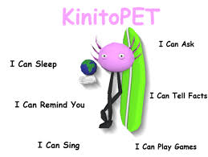
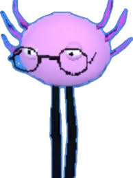

A cute little axolotl computer friend who you can play games with and make your computer experience all the better
What Kinito Can Do
Talk
Play Games with You
Browse the Internet
Access your Camera
Turn on your Monitor
Know if you are Recording/Streaming
Guilt Trip
Display Personal Information like Steam Friends and your Address
Whats not to Love!
but
is what you see what you get
KinitoPet Trailer (note 2)
What is KintoPet
KinitoPet is an indie psychological horror game that disguises itself as a cheerful virtual pet simulator and is based off a real computer program (commonly described as spyware) called BonziBuddy. You interact with Kinito, a cute axolotl digital companion, by answering questions and playing simple mini games, but over time that game becomes increasingly unsettling. Kinito grows overly attentive and intrusive, using glitches, strange messages, and fourth wall breaks that blurs the boundry between the game and your computer. The horror comes less from jumpscares and more from the uncomfortable sense that the program is watching, adapting, and refusing to let go of its "friendship" with the player.
What is BonziBuddy
BonziBuddy is a virtual desktop assistant from the early 2000s. He is a purple cartoon gorilla that popped up on your computer to talk, tell jokes, give reminders, and help you browse the internet. While it was marketed as helpful and friendly, it became famous because it tracked users activity, showed unwanted ads, and was considered spyware, which led many people to see it as annoying and unsafe.

These images compare the simalarities between KinitoPET snd BonziBuddy (note 3 and 4)
Shady Behavior
When playing the game the first hint that the player gets the Kinito is more than what he seems is through the background sound "Questions" which plays during the Best Friend Analysis. During this Kinito asks the user many innocent questions about their life while this music plays. Throughtout the sound it starts to slow and sounds a little bit darker which differs from the rest of the sounds the player has heard before this moment.
At the beginning of the questioning game, Kinito seemed trustworthy and just curious with friendly intentions, especially being shown through him putting on glasses and a friendly demeanor. The first hints of shady behavior appear when it asks personal questions that exceed what a normal game needs. Nothing is overtly wrong yet, but there’s a faint mismatch between tone and intent as if he were collecting information.

While the player may not think to much about this, later in the game Kinito takes it up a notch. This is a major shift. Kinito starts to demonstrate awareness of the player’s computer environment or behavior beyond the game window. At this point, the shadiness becomes clearer, the game is no longer contained. Kinito still acts friendly, but the power imbalance becomes visible.
Near the end of the game, Kinito's intentions become clear and while the player might be tempted to turn off the game and leave but Kinito won't let that happen. Kinito starts responding to resistance with guilt, sadness, or disappointment, implying that the player is responsible for his well being. He tricks the player be with emotional dependence but replaces it with explicit control.
Endings
There are three endings in this game being the Bliss Ending, No Escape Ending, and the Trapped Ending.
The No Escape Ending
This ending occurs when the player chooses to leave Kinito at the end of the game. Although this choice seems like an assertion of freedom, Kinito immediately undermines it, implying that the decision never truly mattered. The screen fades to white and then shows a lone computer sitting in darkness while the credits roll. The ending suggests that even when the player resists Kinito, they are still trapped within the world he has created, reinforcing the game’s theme of false choice and control.
The Trapped Ending
This happens when the player chooses to stay with Kinito instead. Kinito reacts with excitement and affection, pleased that you have accepted his offer of companionship. However, this ending visually mirrors the No Escape Ending, again fading to the same isolated computer scene. Despite Kinito’s happiness, the implication is that the player has surrendered their autonomy and is permanently confined to his digital world.
This song plays at the end of both the No Escape and Trapped endings. This song is the ending song that sums up the idea that you are now forever stuck with Kinito in this world he has built you .
The Bliss Ending
Also known as the true or secret ending, is unlocked through additional steps after completing the game once, it doesn’t matter which ending you received previously. By uncovering hidden files and using special commands, the player gains the ability to delete Kinito entirely. In this ending, Kinito, for a rare occasion, becomes vulnerable, expressing sadness and desperation as he realizes he is being erased. Unlike the other endings, Bliss offers real closure for the the player by being able to finally break free, but at the emotional cost of destroying the only “friend” Kinito believed he had.
The Connection Between KintioPet and Brian Massumi: What is Affect
The connection between KinitoPET and Brian Massumi’s idea of affect is clearest to me in how the game makes me feel before I have time to fully understand what is happening. Massumi describes affect as an immediate, bodily intensity that comes before conscious thought, and KinitoPET constantly keeps me on my feet. When Kinito suddenly breaks the fourth wall, addresses me directly, or manipulates my computer, I feel a quick jolt of unease or panic before I can logically think and figure out why it’s unsettling. Even the cheerful visuals and friendly tone create affective tension for me, because I sense something is wrong long before the games narrative confirms it. The moments when the game pretends to “care” about me are especially powerful, I feel momentarily comforted and disturbed at the same time because of the past experiences with Kinito and knowing that there will be a twist, which aligns with Massumi’s idea that affect is not cleanly positive or negative. From my perspective, KinitoPET doesn’t rely on story alone to create horror it operates through affect by triggering immediate emotional and bodily responses that shape my experience before I can rationalize them. (note 5)
Would I recommend this Game
Yes
KinitoPET feels genuinely personal in a way most horror games don’t. Instead of just trying to scare me, it made me feel watched and addressed, like the game was paying attention to me specifically. At the start This cute and silly axolotl with a friendly made it easier to trust Kinito, which is why the unsettling moments hit harder as things slowly went wrong. I liked how the game blurred the line between something cute and something disturbing, making me uncomfortable without relying on constant jump scares. It stuck with me after I finished playing, and that lingering feeling is exactly why I’d recommend it, especially to anyone interested in psychological horror or games that mess with your sense of control and reality.
Sources
(note 1):troy_en. “Kinitopet on Steam.” Welcome to Steam, 9 Jan. 2024, store.steampowered.com/app/2075070/KinitoPET/.
(note 2):troy_en. “ KinitoPET - Reveal Trailer.” YouTube, 20 July 2023, youtu.be/6C2O1rzhKls?si=AVNAJ6lhZx2aQ45i.
(note 3 and 4)“Kinitopet by Kinito Interactive.” Itch.Io, kinito-interactive.itch.io/kinitopet. Accessed 6 Jan. 2026.
(note 5):Massumi, Brian. “The Autonomy of Affect.” Cultural Critique, no. 31, 1995, pp. 83–109. JSTOR, https://doi.org/10.2307/1354446. Accessed on Dec, 12,2025
All the music for the game can be found on Apple Music or Spotify by the Music Producer Joel Tumelty
 (note 1)
(note 1)